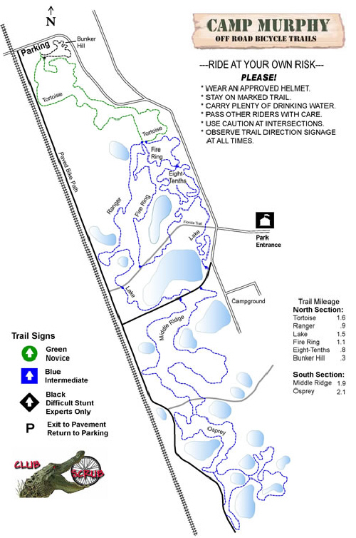

OK, so my GPS has sold me out. I skipped all the Palmettos on Lake Trail and some of the scary-looking bridges and stuff. I'm a wimp. Jonathan Dickinson Park has great trails for all levels. Learm more at
www.clubscrub.org
Map created by
GPSVisualizer.com
Tracks:
- JDPark200609
